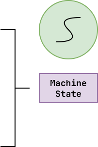
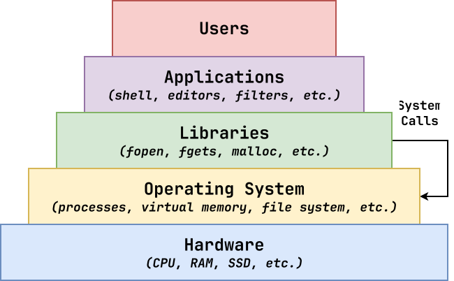
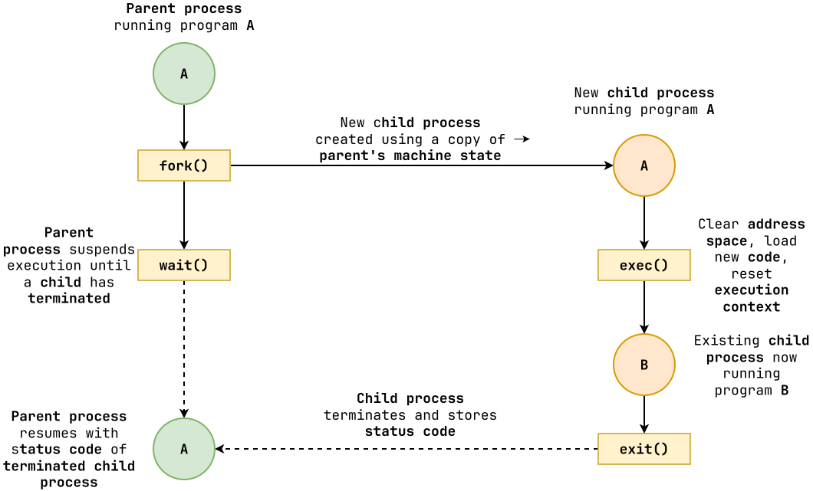

Review: Object-Oriented Programming¶
-
What is object-oriented programming? Why use it?
-
Solve problems by using abstraction, encapsulation, polymorphism, and inheritance.
-
Hide complexity, promote code re-use, and model the world.
What is the context manager protocol? Why use it?
Allows us to use the
withstatement to allocate a resource and automatically release it when the statement is done.Process: Overview¶
A process is a loaded instance of a program; it is a unit of allocation (resources, privileges, etc.).
-
Memory Address Space: code, data, heap, stack.
-
Kernel State: permissions, file descriptors, etc.
-
Execution Context: program counter, stack pointer, data registers.
In Homework 05, when we created a
concurrent.futures.ProcessPoolExecutor, we were allocating multiple processes so we cansmashpasswords in parallel.
Process: System Calls¶
A system call occurs when a user application requests a service, operation, or resource from the operating system kernel.

We can trace the system calls used by a process by using
strace.$ strace cat /etc/hostsProcess: Life Cycle¶

-
Parent process forks to create a new child process.
-
Child process performs actions, possible execs to run another program.
-
Parent process waits for child process.
-
Child process exits.
-
Parent process receives status code of child process.
Example: safe_system.py¶
Write a
SafeSystemobject that implements the context manager protocol to create a child process that executes the given command while the parent process runs.''' Version 0 ''' cmd = ['ls', '-l'] pid = fork() # Discuss: fork allocates child process if pid == 0: # Discuss: Child's pid is 0 os.execvp(cmd[0], cmd) # Discuss: exec changes code else: # Discuss: Parent's pid is non-zero pid, status = os.wait() # Discuss: deallocates child process print(f'{pid} {status}')Questions:
''' Version 1 ''' cmd = ['ls', '-l'] pid = fork() if pid == 0: try: os.execvp(cmd[0], cmd) except OSError: sys.exit(1) else: _, status = os.waitpid(pid, 0) print(f'{pid} {os.WEXITSTATUS(status)}')- What happens if we don't wait at all?
''' Version 2 ''' # Class @dataclass class SafeSystem: command: list[str] pid: Optional[int] = None status: Optional[int] = None @property def state(self): if self.status is None: return 'Running' return f'Terminated ({os.WEXITSTATUS(self.status)})' # Context Manager Protocol def __enter__(self): self.pid = os.fork() if self.pid == 0: # Child try: os.execvp(self.command[0], self.command) except OSError: os._exit(1) return self def __exit__(self, exc_type, exc_val, exc_tb): _, self.status = os.waitpid(self.pid, 0) # Main Execution with SafeSystem(['ls', '-l']) as process: for i in range(10): time.sleep(0.1) sys.stdout.write(f'{i}: {process.state}\r') sys.stdout.write(f'Final: {process.state}\n') -